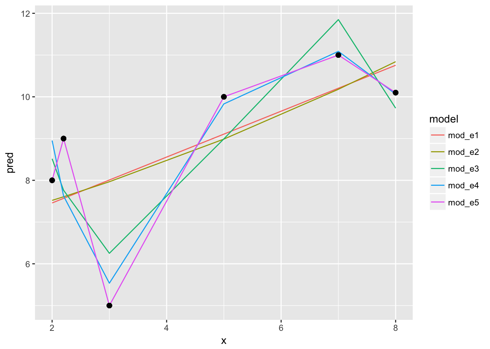
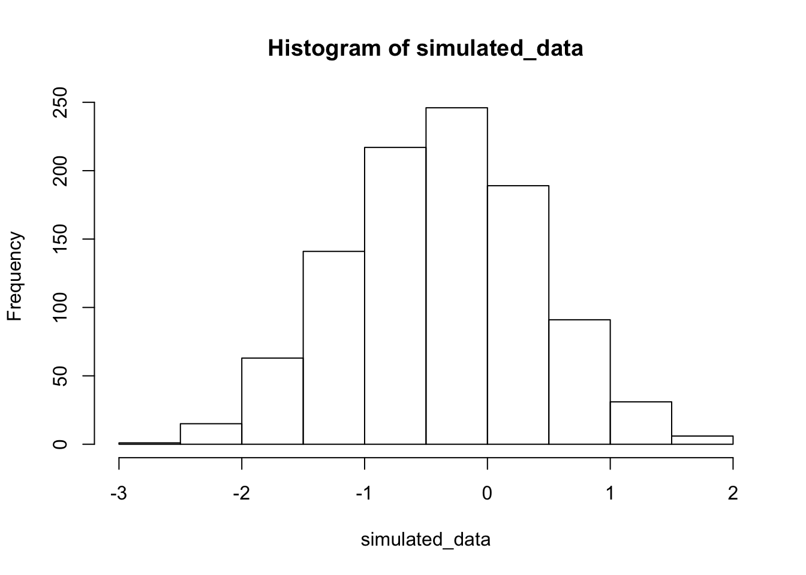

8 1. osa: Mudel ja maailm
Andmeanalüüs ja statistika (siin sünonüümid) on lahutamatu osa igast loodusteadusest. Järgnevalt seletan, miks.
8.0.1 Suur ja väike maailm
Kuna maailm on liiga suur ja keeruline, et seda otse uurida, lõikavad teadlased selle väiksemateks tükkideks, kasutades tordilabidana teaduslike hüpoteese. Tüüpiline hüpotees pakub välja mittematemaatilise seletuse mõnele kitsalt piiritletud loodusnähtusele. Näiteks darvinistlik evolutsiooniteooria püüab seletada evolutsiooni toimemehhanisme. Seda teooriat võib võrrelda empiiriliste andmetega.
Mis juhtub, kui teie lemmikhüpotees on andmetega kooskõlas? Kas see tähendab, et see hüpotees on tõene? Või, et see on tõenäoliselt tõene? Kahjuks on vastus mõlemale küsimusele eitav. Põhjuseks on asjaolu, et enamasti leiab iga nähtuse seletamiseks rohkem kui ühe alternatiivse teadusliku hüpoteesi (näit. lamarksistlik evolutsiooniteooria) ning rohkem kui üks üksteist välistav hüpotees võib olla olemasolevate andmetega võrdses kooskõlas. Asja teeb veel hullemaks, et teoreetiliselt on võimalik sõnastada lõpmatult palju erinevaid teooriaid, mis kõik pakuvad alternatiivseid ja üksteist välistavaid seletusi samale nähtusele.
Olgu peale, kui me vaatame maailma kõiketeadja jumala perspektiivist, siis tema võib vaadelda kõikehõlmava tõendusmaterjali sobivust kõigi võimalike teooriatega ning valida välja selle ainsa teooria, mis kõige paremini tõendusmaterjaliga sobib. Kuigi, see eeldaks, et tal on lõpmata palju andmeid, sest muidu ei oleks tal loogiliselt võimalik lõpmata paljude teooriate vahel valida - aga jumala jaoks on kõik võimalik. Igal juhul meie, surelike, jaoks tähendab see, et teaduslikus “faktis” saab alati kahelda, sest kunagi ei või kindel olla, et parimad teooriad lõpmata suurest teooriapilvest ei ole meil täiesti tähelepanuta jäänud ning, et meie jaoks eksisteerivad andmed kajastaksid hästi kõiki võimalikke andmeid. On selge nagu seebivesi, et mida vähem aega me kulutame teoorialoomeks ja andmete kogumiseks, seda vähem usutavad on ka meie teaduslikud järeldused. Sageli on nii, et mida kehvem on olukord andmerindel, seda rohkem vajame statistikat. Kui meil õnnestuks oma andmetest ilma statistikata saia teha, ei kõhkleks me hetkegi! Eriti, kuna statistikaga käivad käsikäes statistilised mudelid.
8.0.2 Mudeli väike maailm
Ülalmainitud teadusliku meetodi puudused tingivad, et meie huvides on oma teaduslikke probleeme veel ühe taseme võrra lihtsustada, taandades need statistilisteks probleemideks. Selleks tuletame me tavakeelsest ja laiahaardelisest teaduslikust teooriast täpselt formuleeritud matemaatilise mudeli ning seejärel asume uurima oma mudelit.
Mudeli maailm erineb päris maailmast selle poolest, et mudeli maailmas on kõikvõimalikud sündmused, mis põhimõtteliselt võivad juhtuda, juba ette teada ja üles loetud (seda sündmuste kogu kutsutakse parameetriruumiks). Seega, tehniliselt on mudeli maailmas üllatused võimatud.
Mudeli eeliseks teooria ees on, et hästi konstrueeritud mudel on lihtsamini mõistetav — erinevalt vähegi keerulisemast teaduslikust hüpoteesist on mudeli eeldused ja ennustused läbinähtavad ja täpselt formuleeritavad. Mudeli puuduseks on aga, et erinevalt teooriast ei ole mingit võimalust, et mudel vastaks tegelikkusele ehk oleks tõene. Seda sellepärast, et mudel on taotluslikult lihtsustav (erandiks on puhtalt ennustuslikud mudelid, mis on aga enamasti läbinähtamatu struktuuriga). Mudel on kas kasulik või kasutu; teooria on kas tõene või väär. Mudeli ja maailma vahel võib olla kaudne “peegeldus”, aga mitte kunagi otsene side. Seega, ükski number, mis arvutatakse mudeli raames, ei kandu sama numbrina üle teaduslikku ega päris maailma. Ja kogu statistika (ka mitteparameetriline) toimub mudeli väikses maailmas. Arvud, mida statistika teile pakub, elavad mudeli maailmas; samas kui teie teaduslik huvi on suunatud päris maailmale. Näiteks 95% usaldusintervall ei tähenda, et te peaksite olema 95% kindel, et tõde asub selles intervallis – sageli ei tohiks te seda nii julgelt tõlgendada isegi kitsas mudeli maailmas.
8.0.2.1 Näide: Aristoteles, Ptolemaios ja Kopernikus
Aristoteles lõi teooria maailma toimimise kohta, mis domineeris haritud Eurooplase maailmapilti enam kui 1200 aasta vältel. Selle kohaselt asub universumi keskpunktis maakera ning kõik, mida siin leida võib, on tehtud neljast elemendist: maa, vesi, õhk ja tuli. Samas, kogu maailmaruum alates kuu sfäärist on tehtud viiendast elemendist (eeter), mida aga ei leidu maal (nagu nelja elementi ei leidu kuu peal ja sealt edasi). Taevakehad (kuu, päike, planeedid ja kinnistähed) tiirlevad ümber maa kontsentrilistes sfäärides, mis on omavahel seotud (mille vahel pole vaba ruumi). Seega on kogu liikumine eetri sfäärides ühtlane ja ringikujuline ja see liikumine põhjustab pika põhjus-tagajärg ahela kaudu kõiki liikumisi, mida maapeal kohtame. Kaasa arvatud meie sündimine, elukäik ja surm (mis on kõik liikumised). Kõik, mis maapeal huvitavat, ehk kogu liikumine, on algselt põhjustatud esimese liikumise poolt, mille käivitab kõige välimises sfääris paiknev meie jaoks mõistetamatu intellektiga “olend”.
Aristotelese suur teooria ühendab kogu maailmapildi alates kaasaegses mõistes keemiast ja kosmoloogiast kuni bioloogia, maateaduse ja isegi geograafiani. Sellised ühendteooriad on nagu 500 aastased sekvoiad; nad on rasked langetada, aga kui mõni siiski kukub, kostab ragin kaugele. Samas, ühte Aristotelese kosmoloogia olulist puudust nähti kohe. Nimelt ei suuda Aristoteles seletada, miks osad planeedid teavavõlvil vahest suunda muudavad ja mõnda aega lausa vastupidises suunas liiguvad (retrogressioon). Kuna astronoomia põhiline kasutusala oli astroloogia, siis põõrati planeetide liikumisele suurt tähelepanu. Lahenduseks ei olnud aga mitte suure teooria ümbertegemine või ümberlükkamine, vaid nõudlus uue teaduse järele, mis “päästaks fenomenid”. Siin tuli appi Ptolemaios, kes lõi matemaatilise mudeli, kus planeedid mitte lihtsalt ei liigu ringtrajektoori mõõda vaid samal ajal teevad ka väiksemaid ringe ümber esimese suure ringjoone. Neid väiksemaid ringe kutsutakse epitsükliteks. See mudel suutis planeetide liikumist taevavõlvil piisavalt hästi ennustada, et astroloogide nõudlik seltskond sellega rahule jäi.
Ptolemaiosel ja tema järgijatel oli tegelikult mitu erinevat mudelit. Osad neist ei sialdanud epitsükleid ja maakera ei asunud tema mudelites universumi keskel, vaid oli sellest punktist eemale nihutatud — nii et päike ei teinud ringe ümber maakera vaid ümber tühja punkti. On oluline, et leidus epitsüklitega mudel ja ilma epitsükliteta mudel, mis olid matemaatiliselt ekvivalentsed ja seega andsid võrdseid ennustusi. Oli selge, et Aristotelese teooria ja fenomenide päästmise mudelid olid fundamentaalselt erinevad asjad. Samal ajal kui Aritoteles seletas maailma põhiolemust põhjuslike seoste jadana (mitte matemaatiliselt), kirjeldas/ennustas Ptolemaios sellesama maailma käitumist matemaatiliste (mitte põhjuslike) struktuuride abil.
Nii tekkis olukord, kus maailma mõistmiseks kasutati 1000 aasta vältel Aristotelese ühendteooriat aga selle kirjeldamiseks ja tuleviku ennustamiseks hoopis ptolemailisi mudeleid, mida keegi päriselt tõeks ei pidanud ja mida hinnati selle järgi, kui hästi need “päästsid fenomene”.
See toob meid Koperniku juurde, kes teadusajaloolaste arvates vallandas 17. sajandi teadusliku revolutsiooni avaldades raamatu, kus ta asetab päikese universumi keskele ja paneb maa selle ümber ringtrajektooril tiirlema. Kas Kopernikus tõrjus sellega kõrvale Aristotelese, Ptolemaiose või mõlemad? Kaasaegne seisukoht on, et kuigi Kopernikus soovis teha kolmandat, arvasid tema rängalt matemaatilise teose avaldamisele järgnenud 40 aasta vältel pea kõik asjatundlikud astronoomid, et ta soovis välja pakkuda vaid lihtsama alternatiivi epitsüklitega mudelile, mis selleks ajaks oli muutunud väga keerukaks (aga ka samavõrra ennustustäpseks). Kuna Kopernikuse raamat läks trükki ajal, mil selle autor oli juba surivoodil, kirjutas sellele eessõna üks tema vaimulikust sõber, kes püüdis oodatavat kiriklikku pahameelt leevendada sugereerides, et päikese keskele viimine ei ole muud kui mudeldamise trikk, millest ei tasu järeldada, et maakera ka tegelikult ümber päikese tiirleb (piibel räägib, kuidas jumal peatas taevavõlvil päikese, mitte maa). Ja kuna eessõna oli anonüümne, eeldasid lugejad muidugi, et selle kirjutas autor. Lisaks, kuigi Kopernikus tõstis päikese keskele, jäi ta ringikujuliste trajektooride juurde, mis tähendas, et selleks, et tema mudel fenomenide päästmisel hätta ei jääks ja astroloogidele kasutu ei oleks, oli ta sunnitud maad ja planeete liigutama ümber päikese mõõda epitsükleid. Kokkuvõttes oli Koperniku mudel sama keeruline kui Ptolemaiose standardmudel (neis oli võrdne arv epitsükleid) ja selle abil tehtud ennustused planeetide liikumise kohta olid väiksema täpsusega.
Koperniku mudel suutis samas ennustada mõningaid nähtusi (planeetide näiv
heledus muutub ning jõuab maksimumi nende lähimas asukohas maale), mida
Ptolemaiose mudel ei ennustanud. See ei tähenda, et need fenomenid oleksid
olnud vastuolus Ptolemaiose mudeliga. Lihtsalt, nende Ptolemaiose mudelisse
sobitamiseks oli vaja osad mudeli parameetrid fikseerida nii-öelda suvalistele väärtustele.
Seega Koperniku mudel töötas nii, nagu see oli, samas kui Ptolemaiose mudel vajas ad hoc tuunimimst. Kui vaadata Koperniku produkti teooriana, mitte mudelina, siis oli sel selgeid eeliseid Aristotelese ees. Juba ammu oli nähtud komeete üle taevavõlvi lendamas (mis Aristotelese järgi asusid kinnistähtede muutumatus sfääris) ja supernoova tekkimist ja kadu, ning enam ei olnud kaugel ka aeg mil Galileo joonistas oma teleskoobist kraatreid kuu pinnal, näidates, et kuu ei saanud koosneda täiuslikust viiendast elemendist ja et sellel toimusid ilmselt sarnased füüsikalised protsessid kui maal. On usutav, et kui Kopernikus oleks jõudnud oma raamatule ise essõna kirjutada, oleks tema teooria vastuvõtt olnud palju kiirem (ja valulisem). Seega, teooria ja mudeli eristus on tähtis!
Koperniku teooriast tuleneb loogilise paratamatusena, et tähtedel esineb
maapealt vaadates parallaks. See tähendab, et kui maakera koos astronoomiga
teeb poolringi ümber päikese, siis kinnistähe näiv asukoht taevavõlvil
muutub sest astronoom vaatleb teda teise nurga alt. Pange oma nimetissõrm
näost u 10 cm kaugusele, sulgege parem silm, seejärel avage see ning sulgege
vasak silm ja te näete oma sõrme parallaksi selle näiva asukoha muutusena.
Tähtede parallaksi püüti mõõta juba Aleksandrias 1000 aastat enne Kopernikust,
et leida kinnitust teooriale, mille kohaselt maakera tiirleb ümber päikese.
Mõõtmised ei näidanud aga parallaksi olemasolu (sest maa trajektoori diameeter
on palju lühem kui maa kaugus tähtedest). Parallaks mõõdeti edukalt alles 1838,
siis kui juba ammu iga koolijüts uskus, et maakera tiirleb ümber päikese!
8.0.3 Millest koosneb mudel?
Mudel on matemaatilise formalism, mis püüab kirjeldada füüsikalist protsessi. mudeli struktuuris on komponent, mis kirjeldab ideaalseid ennustusi ja eraldi veakomponent, mis kirjeldab kuidas andmepunktid varieeruvad selle ideaalse ennustuse ümber.
Näiteks, sageli kirjeldame me produkti kuhjumist ensüümreaktsioonis eksponentsiaalse funktsioni (mudeli) abil. Kui meie andmed seda tüüpi funktiooniga sobivad, ütleb see meile midagi konkreetse ensüümi töömehhanismi kohta. Teisest küljest, need mudelid, mis on “generatiivsed”, suudavad lisaks simuleerida ka uusi andmeid. Sealhulgas ka selliseid, mida päris maailmas ei saa kunagi esineda, sest seal puuduvad vastavad tingimused. Mudelisse saab aga sisse kirjutada igasuguseid tingimusi ehk parameetri väärtusi (näit substraadi konsentratsioone, mida me ei suuda “päriselt” saavutada).
Oletame, et me mõõtsime N inimese pikkuse cm-s ja kaalu kg-s ning meid huvitab, kuidas inimeste pikkus sõltub nende kaalust. Lihtsaim mudel pikkuse sõltuvusest kaalust on pikkus = kaal (formaliseeritult: y = x) ja see mudel ennustab, et kui Johni kaal = 80 kg, siis John on 80 cm pikkune. Selle mudeli saame graafiliselt kujutada nii
x <- 50:200 #y = kaal
y <- x # x = pikkus
plot(y~x, type="l", xlab="weight in kg", ylab="heigth in cm", main="fixed linear model")
kõigepealt painutame sirget. See joon on ikka veel täielikult fikseeritud, aga ta pole enam sirge (ehki tehniliselt on meil ikka lineaarne seos x ja y vahel)
x <- 50:200
y <- x + x**2
plot(y~x, type="l")
Mudeli keeles tähistame me seda, mida me ennustame (antud juhul pikkus) Y-ga ja seda, mille väärtuse põhjal me ennustame (antud juhul kaal) X-ga. Seega sirge mudeli matemaatiline formalism on Y = X. See on äärmiselt jäik mudel: ta on sirge kujuline ja selle sirge asukoht parameetriruumis on rangelt fikseeritud. Sirge lõikab y telge alati 0-s (ehk mudeli keeles: selle sirge intercept ehk lõikepunkt Y teljel = 0) ja tema tõusunurk saab olla ainult 45 kraadi (mudeli keeles: mudeli slope ehk tõus = 1). Selle mudeli jäikus tuleneb sellest, et selles mudelis ei ole parameetreid, mida me saaksime vabalt muuta ehk tuunida.
Kuidas aga kirjeldada sirget, mis võib paikneda 2-mõõtmelises ruumis ükskõik millises asendis? Selleks lisame mudelisse kaks parameetrit, intercept (a) ja tõus (b). Kui a=0 ja b=0, saame me eelpool kirjeldatud mudeli y = x. Kui a = 102, siis sirge lõikab y telge väärtusel 102. Kui b = 0.8, siis x-i tõustes 1 ühiku võrra tõuseb y-i väärtus 0.8 ühiku võrra. Kui a = 100 ja b = 0, siis saame sirge, mis on paraleelne x-teljega ja lõikab y telge väärtusel 100 (mis juhtub, kui a = Inf?). Seega, Teades a ja b väärtusi ning omistades x-le suvalise meid huvitava väärtuse, saab ennustada y-i keskmist väärtust. Näiteks, olgu andmete vastu fititud mudel:
pikkus(cm) = 102 + 0.8 * kaal(kg) ehk
y = 102 + 0.8x.
Omistades nüüd kaalule väärtuse 80 kg, tuleb mudeli poolt ennustatud keskmine pikkus 102 + 0.8 * 80 = 166 cm. Iga kg lisakaalu ennustab mudeli kohaselt 0.8 cm võrra suuremat pikkust.
a <- 102
b <- 0.8
x <- 0:100
y <- a + b * x
plot(y~x, type="l", xlab="weight in kg", ylab="heigth in cm", main="a more flexible linear model", ylim=c(50, 200))
See mudel ennustab, et 0 kaalu juures on pikku 102 cm, mis on rumal, aga mudelite puhul tavaline, olukord. Me tuunime mudelit andmete peal, mis ei sisalda 0-kaalu (sest 0-kaaluga inimesi pole olemas). Meie valimiandmed ei peegelda täpselt inimpopulatsiooni. Sirge mudel ei peegelda täpselt pikkuse-kaalu suhteid vahemikus, kus meil on reaalseid kaaluandmeid; ja ta teeb seda veelgi vähem seal, kus meil mõõdetud kaalusid ei ole. Seega pole mõtet imestada, miks mudeli intercept meie üle irvitab.
8.0.4 4 mõistet
X ja Y on muutujad, a ja b on parameetrid. Muutujate väärtused fikseeritakse andmete poolt, parameetrid fititakse muutujate väärtuste põhjal. Fititud mudel ennustab igale X-i väärtusele vastava kõige tõenäolisema Y väärtuse (Y keskväärtuse sellel X-i väärtusel).
Y - mida me ennustame (dependent variable, predicted varable)
X - mille põhjal me ennustame (independent variable, predictor)
muutuja (variable) - iga asi, mida me valimis mõõdame (X ja Y on kaks muutujat). Muutuja väärtused on fikseeritud andmete poolt. Muutujal on sama palju fikseeritud väärtusi kui meil on selle muutuja kohta mõõtmisandmeid.
parameeter (parameter) - mudeli koefitsient, millele võib omistada suvalisi väärtusi. Parameetreid tuunides fitime me mudeli võimalikult hästi sobituma andmetega.
8.0.5 Mudeli fittimine
Mudelid sisaldavad (1) matemaatilisi struktuure, mis määravad mudeli tüübi ning (2) parameetreid, mida saab andmete põhjal tuunida, niiviisi täpsustades mudeli kuju.
Seda tuunimist nimetatakse mudeli fittimiseks. Mudelit fittides on eesmärk saavutada antud tüüpi mudeli maksimaalne sobivus andmetega. Näiteks võrrand y = a + bx määrab mudeli, kus y = x on on see struktuur, mis tagab, et mudeli tüüp on sirge, ning a ja b on parameetrid, mis määravad sirge asendi. Seevastu struktuur y = x + x^2 tagab, et mudeli y = a + b1x + b2x^2 tüüp on parabool, ning parameetrite a, b1 ja b2 väärtused määravad selle parabooli täpse kuju. Ja nii edasi.
Hea mudel on
võimalikult lihtsa struktuuriga, mille põhjal on veel võimalik teha järeldusi protsessi kohta, mis genereeris mudeli fittimiseks kasutatud andmeid;
sobitub piisavalt hästi andmetega (eriti uute andmetega, mida ei kasutatud selle mudeli fittimiseks), et olla relevantne andmeid genereeriva protsessi kirjeldus;
genereerib usutavaid simuleeritud andmeid (see näitab mudeli kvaliteeti).
Sageli fititkse samade andmetega mitu erinevat tüüpi mudelit ja püütakse otsustada, milline neist vastab kõige paremini eeltoodud tingimustele. Näiteks, kui sirge suudab kaalu järgi pikkust ennustada paremini kui parabool, siis on sirge mudel kooskõlas teadusliku hüpoteesiga, mis annaks mehhanismi protsessile, mille käigus kilode lisandumine viiks laias kaaluvahemikus inimeste pikkuse kasvule ilma, et pikkuse kasvu tempo kaalu tõustes langeks.
8.0.5.1 Üle- ja alafittimine
Osad mudelite tüübid on vähem paindlikud kui teised (parameetreid tuunides on neil vähem liikumisruumi). Kuigi sellised mudelid sobituvad halvemini andmetega, võivad need ikkagi paremini kui mõni paindlikum mudel välja tuua andmete peidetud olemuse. Mudeldamine eeldab, et me usume, et meie andmetes leidub nii müra (mida mudel võiks ignoreerida), kui signaal (mida mudel püüab tabada). Kuna mudeli jaoks näeb müra samamoodi välja kui signaal, on iga mudel kompromiss üle- ja alafittimise vahel. Me lihtsalt loodame, et meie mudel on piisavalt jäik, et mitte liiga palju müra modelleerida ja samas piisavalt paindlik, et piisaval määral signaali tabada.
Üks kõige jäigemaid mudeleid on sirge, mis tähendab, et sirge mudel on suure tõenäosusega alafittitud. Keera sirget kuipalju tahad, ikka ei sobitu ta enamiku andmekogudega. Ja need vähesed andmekogud, mis sirge mudeliga sobivad, on genereeritud teatud tüüpi lineaarsete protsesside poolt. Sirge on seega üks kõige paremini tõlgendatavaid mudeleid. Teises äärmuses on polünoomsed mudelid, mis on väga paindlikud, mida on väga raske tõlgendada ja mille puhul on suur mudeli ülefittimise oht. Ülefititud mudel järgib nii täpselt valimiandmeid, et sobitub hästi valimis leiduva juhusliku müraga ning seetõttu sobitub halvasti järgmise valimiga samast populatsioonist (sest igal valimil on oma juhuslik müra). Üldiselt, mida rohkem on mudelis tuunitavaid parameetreid, seda paindlikum mudel, seda kergem on seda valimiandmetega sobitada ja seda raskem on seda mudelit tõlgendada. Veelgi enam, alati on võimalik konstrueerida mudel, mis sobitub täiuslikult lõpliku arvu andmepunktidega (selle mudeli parameetrite arv = N). Selline mudel on täpselt sama informatiivne kui andmed, mille põhjal see fititi — ja täiesti kasutu.
 Joonis: Kasvava paindlikusega polünoomsed mudelid. mod_e1 on sirge võrrand y = a + b1x (2 parameetrit: a ja b1), mod_e2 on lihtsaim võimalik polünoom: y= a + b1x + b2x^2 (3 parameetrit), …, mod_e5: y= a + b1x + b2x^2 + b3x^3 + b4x^4 + b5x^5 (6 parameetrit). mod_e5 vastab täpselt andmepunktidele (N = 6).
AIC(mod_e1, mod_e2, mod_e3, mod_e4, mod_e5)## df AIC
## mod_e1 3 27.77993
## mod_e2 4 29.76669
## mod_e3 5 26.21330
## mod_e4 6 25.11245
## mod_e5 7 -InfAIC näitab, et parim mudel on mod_e4. Aga kas see on ka kõige kasulikum mudel? Mis siis, kui 3-s andmepunkt on andmesisestaja näpuviga?
AIC - Akaike Informatsiooni Kriteerium - vaatab mudeli sobivust andmetega
ja mudeli parameetrite arvu.
Väikseim AIC tähitab parimat fitti väikseima parameetrite arvu juures
(kompromissi) ja väikseima AIC-ga mudel on eelistatuim mudel. Aga seda ainult
võrreldud mudelite hulgas. AIC-i absoluutväärtus ei loe - see on suhteline näitaja.  Joonis: sedamööda kuidas parameetrite arv mudelis kasvab, kasvab ka R ruut. R ruut 0.8 tähendab, et x-i varieeruvus suudab seletada kuni 80% y-i varieeruvusest. Lisaparameetri lisamine ei saa põhimõtteliselt R ruutu vähendada. Aga selle kasvu kiirus on aeglustuv. Ühel hetkel ei õigusta mudeli fiti paranemine enam mudeli paindlikuse kasvu (mis mõlemad saavutatakse parameetreid lisades).
Joonis: sedamööda kuidas parameetrite arv mudelis kasvab, kasvab ka R ruut. R ruut 0.8 tähendab, et x-i varieeruvus suudab seletada kuni 80% y-i varieeruvusest. Lisaparameetri lisamine ei saa põhimõtteliselt R ruutu vähendada. Aga selle kasvu kiirus on aeglustuv. Ühel hetkel ei õigusta mudeli fiti paranemine enam mudeli paindlikuse kasvu (mis mõlemad saavutatakse parameetreid lisades).
Ülefittimise vältimiseks kasutavad Bayesi mudelid informatiivseid prioreid,
mis välistavad ekstreemsed parameetriväärtused.
Vt http://elevanth.org/blog/2017/08/22/there-is-always-prior-information/ 8.0.6 Veamudel
Eelpool kirjeldatud mudelid on deterministlikud — nad ei sisalda hinnangut andmete varieeruvusele ennustuse ümber. Neid kutsutakse ka protsessi mudeliteks sest nad modelleerivad protsessi täpselt. Ehk kui mudel ennustab, et 80 kg inimene on 166 cm pikkune, siis protsessi mudel ei ütle, kui suurt kaalust sõltumatut pikkuste varieeruvust võime oodata 80 kg-ste inimeste hulgas? Selle hinnangu andmiseks tuleb mudelile lisada veel üks komponent, veamudel ehk veakomponent, mis sageli tuuakse sisse normaaljaotuse kujul. Veakomponent modelleerib üksikute inimeste pikkuste varieeruvust (mitte keskmise pikkuse varieeruvust) igal mõeldaval ja mittemõeldaval kaalul. Tänu sellele ei ole mudeli ennustused enam deterministlikud, vaid tõenäosuslikud.
Kuidas veakomponent lineaarsesse mudelisse sisse tuua?
ilma veakomponendita mudel: y = a + bx
Veakomponent tähendab, et y-i väärtus varieerub ümber mudeli poolt ennustatud keskväärtuse ja seda varieeruvust normaaljaotusega modelleerides saame
y ~ dnorm(mu, sigma)
kus mu on mudeli poolt ennustatud keskväärtus ja sigma on mudeli poolt ennustatud standardhälve ehk varieeruvus andmepunktide tasemel. Tilde ~ tähistab seose tõenäosuslikkust.
Sirge mudelisse varieeruvuse sisse toomiseks defineerime mu ümber nõnda:
mu = a + bx, mis tähendab, et
y ~ dnorm(a + bx, sigma)
See ongi sirge mudel koos veakomponendiga. Peatükis 3 õpime me selliste mudelitega töötama.
Kõik statistilised mudelid on tõenäosusmudelid ning sisaldavad veakomponenti.
8.0.7 Statistiline mudel koosneb 3 komponendist:
> (1) matemaatiline struktuur, mis sisaldab muutujaid ja annab mudeli tüübi,
> (2) tuunitavad parameetrid ja
> (3) veamudel.Muide, kõik veamudelid, millega me edaspidi töötame, modelleerivad igale x-i väärtusele (kaalule) sama suure y-i suunalise varieeruvuse (pikkuste sd). Suurem osa statistikast kasutab eeldusi, mida keegi päriselt tõe pähe ei võta, aga millega on arvutuslikus mõttes lihtsam elada.
8.0.7.1 Enimkasutatud veamudel on normaaljaotus.
Oletame, et meil on kolm andmepunkti ning me usume, et need andmed on juhuslikult tõmmatud normaaljaotusest või sellele lähedasest jaotusest. Normaaljaotuse mudelit kasutades me sisuliselt deklareerime, et me usume, et kui me oleksime olnud vähem laisad ja 3 mõõtmise asemel sooritanuks 3000, siis need mõõtmised sobituksid piisavalt hästi meie 3 väärtuse peal fititud normaaljaotusega. Seega, me usume, et omades 3 andmepunkti me teame juba umbkaudu, millised tulemused me oleksime saanud korjates näiteks 3 miljonit andmepunkti. Oma mudelist võime simuleerida ükskõik kui palju andmepunkte.
Aga pidage meeles, et selle mudeli fittimiseks kasutame me ainult neid andmeid, mis meil päriselt on — ja kui meil on ainult 3 andmepunkti, on tõenäoline, et fititud mudel ei kajasta hästi tegelikkust.
Halvad andmed ei anna kunagi head tulemust.
Eelnev ei kehti Bayesi mudelite kohta, mis toovad priorite kaudu sisse lisainfot, mis ei kajastu valimiandmetes ja võib analüüsi päästa.
Kuidas panna skeptik uskuma, et statistilised meetodid töötavad halvasti väikestel valimitel? Siin aitab simulatsioon, kus me tõmbame 3-se valimi etteantud populatsioonist ning üritame selle valimi põhjal ennustada selleasama populatsiooni struktuuri. Kuna tegemist on simulatsiooniga, teame täpselt, et populatsioon, kust me tõmbame oma kolmese valimi, on normaaljaotusega, et tema keskväärtus = 0 ja et tema sd = 1. Me fitime oma valimi andmetega 2 erinevat mudelit: normaaljaotuse ja Studenti t jaotuse.
## Loading required package: Rcpp## Loading 'brms' package (version 1.10.0). Useful instructions
## can be found by typing help('brms'). A more detailed introduction
## to the package is available through vignette('brms_overview').
## Run theme_set(theme_default()) to use the default bayesplot theme.##
## Attaching package: 'brms'## The following objects are masked from 'package:rethinking':
##
## LOO, stancode, WAIC## `stat_bindot()` using `bins = 30`. Pick better value with `binwidth`.
Joonis: juhuvalim normaaljaotusest, mille keskmine=0 ja sd=1 (n=3; andmepunktid on näidatud mustade munadena). Sinine joon - popualtsioon, millest tõmmati valim; punane joon - normaaljaotuse mudel, mis on fititud valimi andmetel; must joon - Studenti t jaotuse mudel, mis on fititud samade andmetega.
Mõlemad mudelid on süstemaatiliselt nihutatud väiksemate väärtuste poole ja alahindavad varieeruvust. t jaotuse mudel on oodatult paksemate sabadega ja ennustab 0-st kaugele palju rohkem väärtusi kui normaaljaotuse mudel. Kuna me teame, et populatsioon on normaaljaotusega, pole väga üllatav, et t jaotus modeleerib seda halvemini kui normaaljaotus.
Igal juhul, mõni teine juhuvalim annaks meile hoopis teistsugused mudelid, mis rohkem või vähem erinevad algsest populatsioonist.
Mis juhtub kui me kasutame oma normaaljaotuse mudelit uute andmete simuleerimiseks? Kui lähedased on need simuleeritud andmed populatsiooni andmetega ja kui lähedased valimi andmetega, millega me normaaljaotuse mudeli fittisime?
set.seed(19) #muudab simulatsiooni korratavaks
#tõmbame 3 juhuslikku arvu normaalhaotusest, mille keskväärtus = 0 ja sd = 1.
df <- tibble(sample_data=rnorm(3))
#fitime normaaljaotuse mudeli valimi keskmise ja sd-ga
mean(df$sample_data); sd(df$sample_data)## [1] -0.3817353## [1] 0.7896821#simuleerime 1000 uut andmepunkti fititud mudelist
simulated_data <- rnorm(1000, mean(df$sample_data), sd(df$sample_data))
#arvutame simuleeritud andmete keskmise ja sd ning joonistame neist histogrammi
mean(simulated_data); sd(simulated_data); hist(simulated_data)## [1] -0.3848133## [1] 0.7749198
Nagu näha, on uute (simuleeritud) andmete keskväärtus ja SD väga sarnased algsete andmete omale, mida kasutasime mudeli fittimisel. Kahjuks ei ole need aga kaugeltki nii sarnased algsele jaotusele, mille kuju me püüame oma andmete ja mudeli pealt ennustada. Seega on meie mudel üle-fittitud, mis tähendab, et ta kajastab liigselt neid valimi aspekte, mis ei peegelda algse populatsiooni omadusi. Loomulikult ei vasta ükski mudel päriselt tegelikkusele. Küsimus on pigem selles, kas mõni meie mudelitest on piisavalt hea, et olla kasulik. Vastus sellele sõltub, milleks plaanime oma mudelit kasutada.
mean(simulated_data>0); mean(simulated_data>1)## [1] 0.317## [1] 0.037Kui populatsiooniväärtustest on 50% suuremad kui 0, siis mudeli järgi vaevalt 32%. Kui populatsiooniväärtustest on 16% suuremad kui 1, siis mudeli järgi vaevalt 4%. See illustreerib hästi mudeli kvaliteeti.
library(brms)
sim_t <- rstudent_t(1000, 2, mean(df$sample_data), sd(df$sample_data))
mean(sim_t>0); mean(sim_t>1)## [1] 0.338## [1] 0.11Samad ennustused t jaotusest on isegi paremad! Aga kumb on ikkagi parem mudel populatsioonile?
8.0.8 normaaljaotuse ja lognormaaljaotuse erilisus
Normaaljaotus ja lognormaaljaotus on erilised sest
keskne piirteoreem ütleb, et olgu teie valim ükskõik millise jaotusega, paljudest valimitest arvutatud aritmeetilised keskmised on alati enam-vähem normaaljaotusega (kui n>30). Selle matemaatilise formalismi tuletus füüsikalisse maailma on nn “elementaarsete vigade hüpotees”, mille kohaselt paljude väikeste üksteisest sõltumatute juhuslike efektide (vigade) summa annab tulemuseks normaaljaotuse. Paraku annavad enamus bioloogilisi mõõtmisi eranditult mitte-negatiivseid tulemusi. Sageli on selliste mõõtmiste tulemuste jaotused ebasümmeetrilised (v.a. siis, kui cv = sd/mean on väike) ja siis on meil sageli tegu lognormaaljaotusega, mis tekkib log-normaalsete muutujate korrutamisest (mitte liitmisest, nagu normaaljaotuse puhul). Keskne piirteoreem 2: suvalise jaotusega muutujate geomeetrilised keskmised on lognormaaljaotusega. Elementaarsete vigade hüpotees 2: Kui juhuslik varieeruvus tekib paljude juhuslike efektide korrutamisel, on tulemuseks lognormaaljaotus. Lognormaaljaotuse elementide (arvude) logaritmimisel saame normaaljaotuse.
Mõlemad jaotused (normaal ja lognormaal) on maksimaalse entroopiaga jaotused. Entroopiat vaadeldakse siin informatsiooni/müra kaudu — maksimaalse entroopiaga süsteem sisaldab maksimaalselt müra ja minimaalselt informatsiooni (Shannoni informatsiooniteooria). See tähendab, et väljaspool oma parameetrite tuunitud väärtusi on need normaal- ja lognormaaljaotused minimaalselt informatiivsed. Näiteks normaaljaotusel on kaks parameetrit, mu ja sigma (ehk keskmine ja standardhälve). Seega, andes normaaljaotusele ette keskväärtuse ja standardhälbe fikseerime üheselt jaotuse ehk mudeli kuju ja samas lisame sinna minimaalselt muud (sooviamtut) informatsiooni. Teised maksimaalse entroopiaga jaotused on eksponentsiaalne jaotus, binoomjaotus ja poissoni jaotus. Maksimaalse entroopiaga jaotused sobivad hästi Bayesi prioriteks sest me suudame paremini kontrollida, millist informatsiooni me neisse surume.
8.1 Küsimused, mida statistika küsib
Statistika abil saab vastuseid järgmisetele küsimustele:
kuidas näevad välja teie andmed ehk milline on just teie andmete jaotus, keskväärtus, varieeruvus ja koos-varieeruvus? Näiteks, mõõdetud pikkuste ja kaalude koos-varieeruvust saab mõõta korrelatsioonikordaja abil.
mida me peaksime teie valimi andmete põhjal uskuma populatsiooni parameetri tegeliku väärtuse kohta? Näiteks, kui meie andmete põhjal arvutatud keskmine pikkus on 178 cm, siis kui palju on meil põhjust arvata, et tegelik populatsiooni keskmine pikkus > 185 cm?
mida ütleb statistilise mudeli struktuur teadusliku hüpoteesi kohta? Näiteks, kui meie poolt mõõdetud pikkuste ja kaalude koos-varieeruvust saab hästi kirjeldada kindlat tüüpi lineaarse regressioonimudeliga, siis on meil ehk tõendusmaterjali, et pikkus ja kaal on omavahel sellisel viisil seotud ja eelistatud peaks olema teaduslik teooria, mis just sellise seose tekkimisele bioloogilise mehhanismi annab.
mida ennustab mudel tuleviku kohta? Näiteks, meie lineaarne pikkuse-kaalu mudel suudab ennustada tulevikus kogutavaid pikkuse andmeid. Aga kui hästi?
statistika ülesanne on lähtuvalt piiratud hulgast andmetest ja mudelitest kvantifitseerida parimal võimalikul viisil kõhedust, mida peaksime tundma vastates eeltoodud küsimustele.
Statistika ei vasta otse teaduslikele küsimustele ega küsimustele päris maailma kohta. Statistilised vastused jäävad alati kasutatud andmete ja mudelite piiridesse. Sellega seoses peaksime eelistama hästi kogutud rikkalikke andmeid ja paindlikke mudeleid. Siis on lootust, et hüpe mudeli koefitsientidest päris maailma kirjeldamisse tuleb üle kitsama kuristiku. Bayesil on siin eelis, sest osav statistik suudab koostöös teadlastega priori mudelisse küllalt palju kasulikku infot koguda. Samas, amatöör suudab bayesi abil samavõrra käkki keerata. Mida paindlikum on meetod, seda vähem automaatne on selle mõistlik kasutamine.